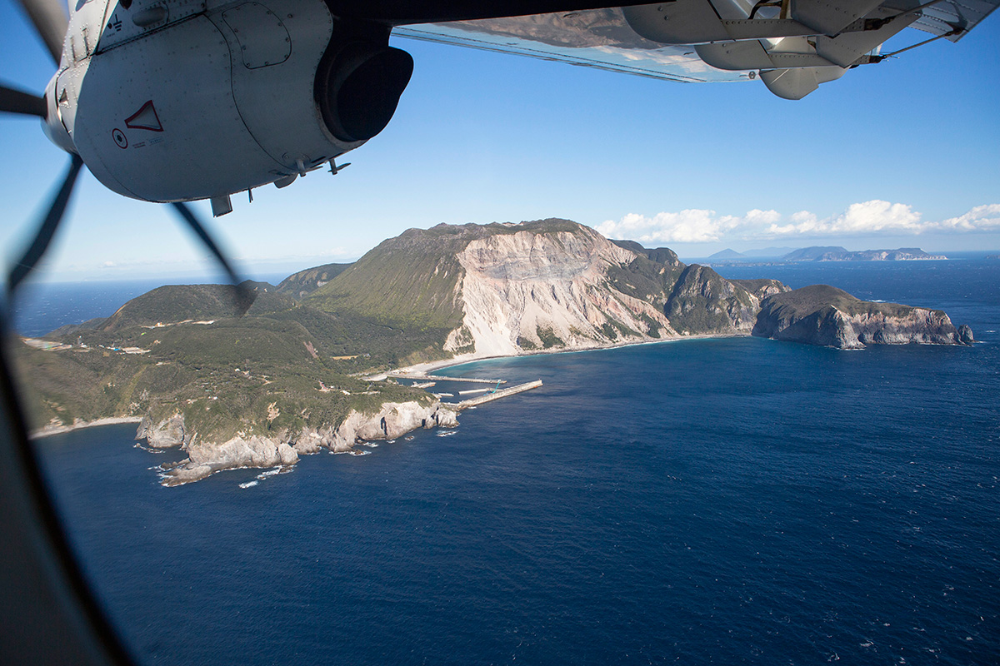
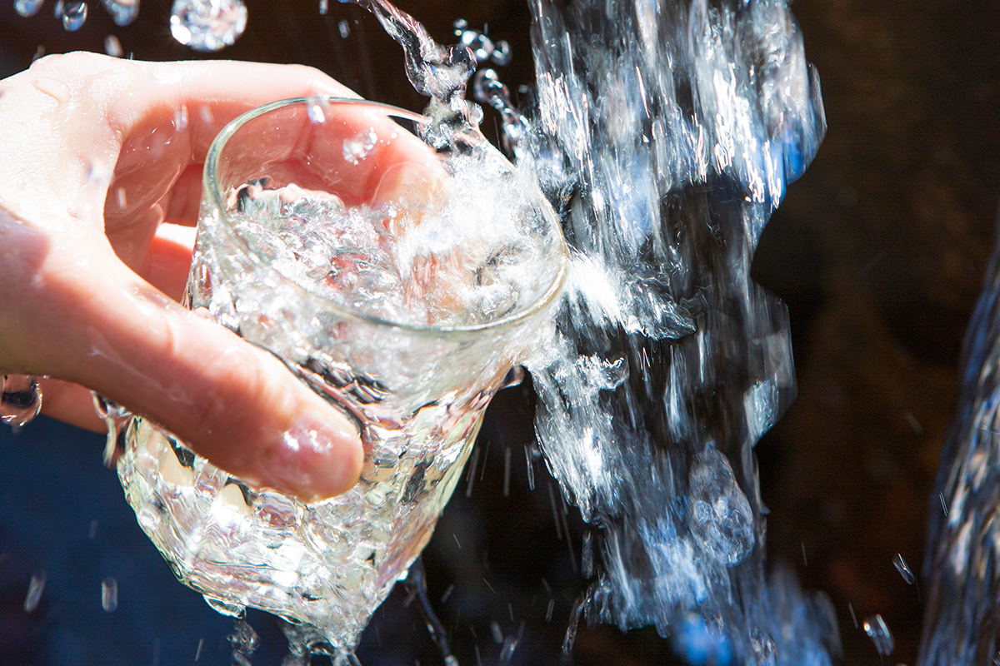
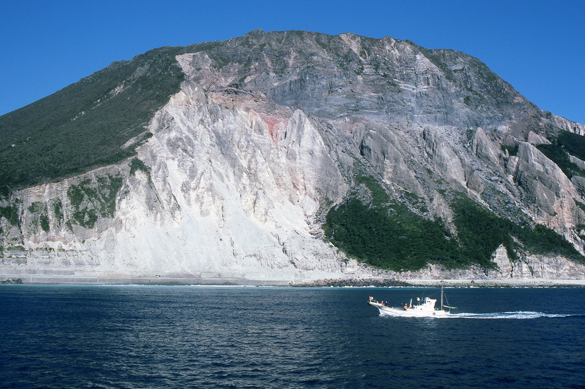
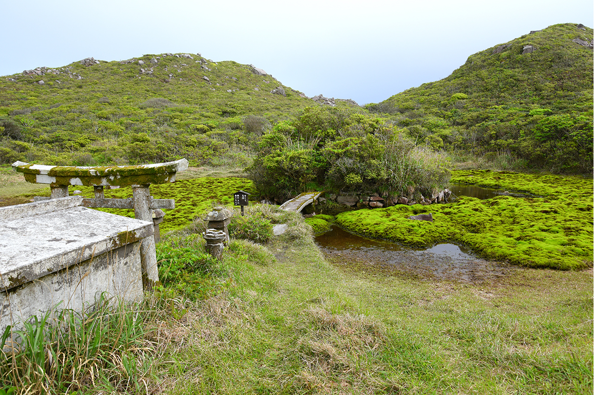
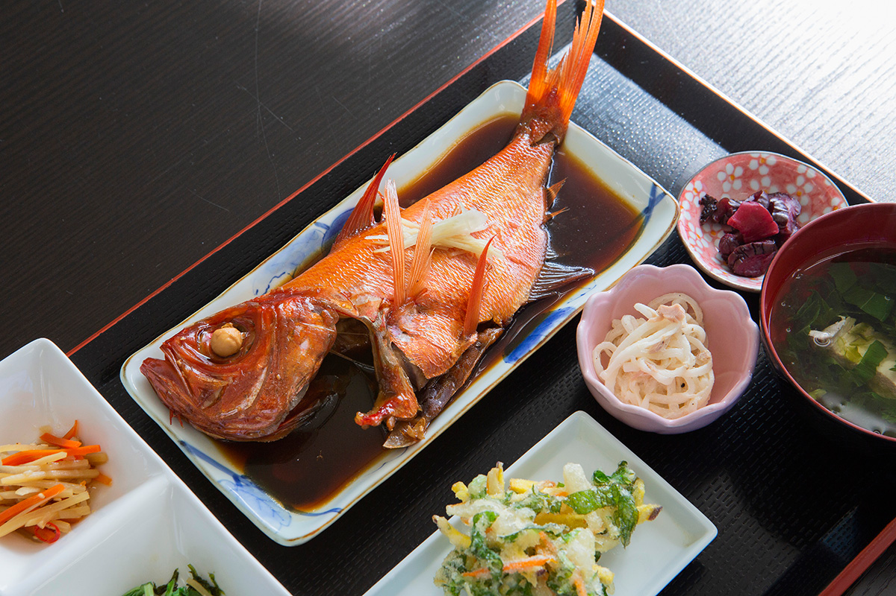
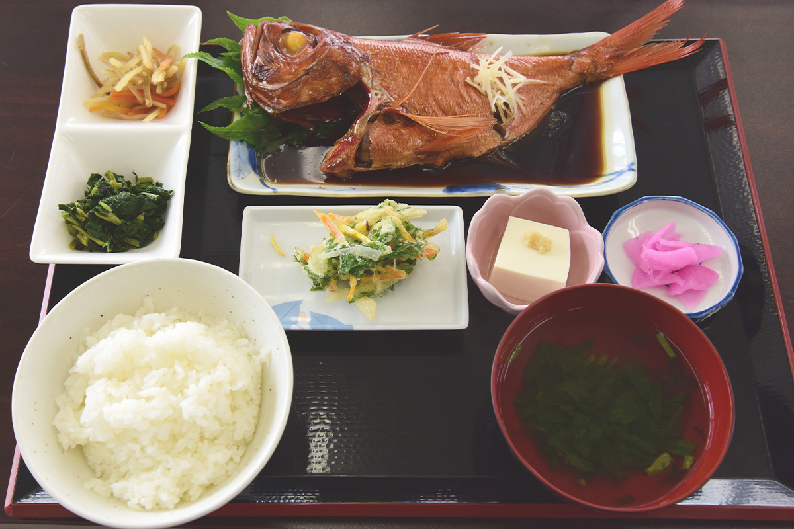
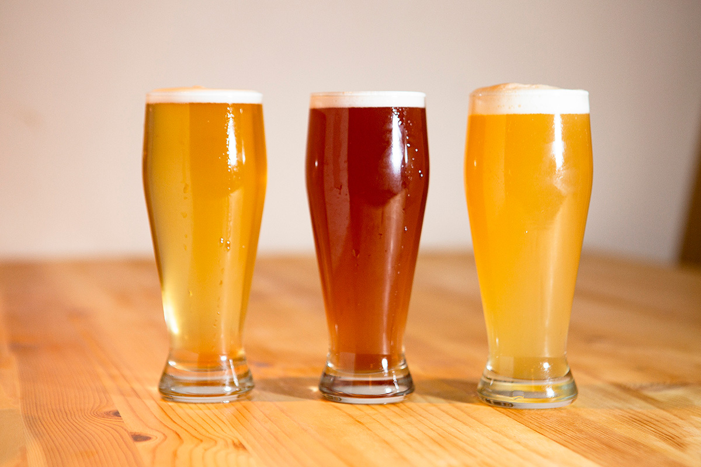
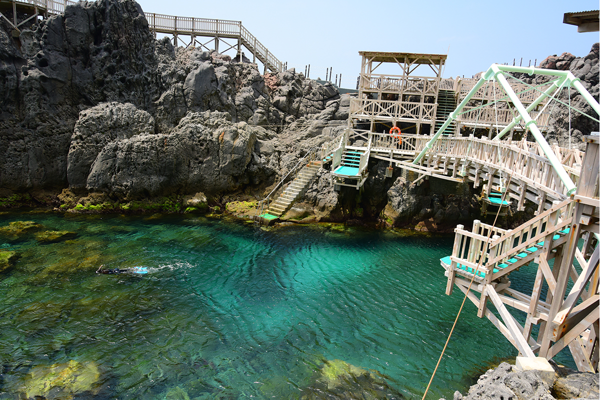
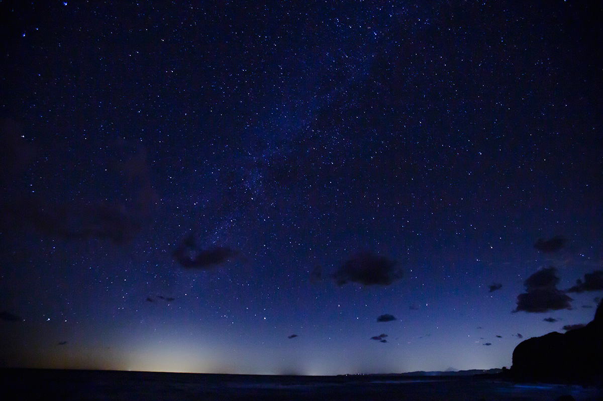

Токио · остров Кодзусима · природа и еда
Кодзусима: остров, где боги делили воду, а золотоглазого окуня едят запросто

На Кодзусиму можно попасть только по воздуху или по морю, и это часть его притяжения. Остров относится к столичному округу Токио, и узнать его проще всего через еду: рыбу, родниковую воду и миф о том, как боги делили эту воду между островами.
Остров
Рыба и вода
Кодзусима лежит почти посередине архипелага Идзу. Вокруг проходит тёплое течение Куросио, и оно создаёт богатые рыбные угодья, поэтому остров прежде всего рыбацкий. Кинмэдай, красного окуня с золотыми глазами, ловят здесь круглый год, а кальмаров и японских лангустов по сезонам. Рыбу, которая на материке считается дорогой, на острове едят запросто.
Второе богатство Кодзусимы это вода. По обилию родников остров выделяется даже среди островов Идзу: водопровод здесь питается из подземных источников. Дождь, который выпадает на гору Тэндзё, выходит у её подножия чистыми ключами, и этот пейзаж стал символом богатства острова.

По данным на июнь 2023 года, на острове жили 1802 человека. Площадь Кодзусимы 18,58 квадратного километра, береговая линия около 22 километров.
Миф
Как боги делили воду

Подлетаете вы к острову или подплываете, первым делом поражает белизна горы. Тэндзё высотой всего 572 метра сложилась при извержении 838 года: сначала вырос конус из вулканических обломков, потом купол из лавы, и вулкан затих. Отсюда и белый цвет, и шершавые склоны.
С горой связан главный миф острова, «легенда о раздаче воды». Его записали в «Миякэ-ки», хронике, которую, как считается, завершили в конце периода Камакура (начало XIV века). Божество Мисима-даймёдзин вместе с другими богами за семь дней и семь ночей огнём создало семь островов. Первым появился островок у берегов Атами, вторым Кодзусима. Прежде чем браться за остальные пять, боги собрались на совет, и остров, где они сошлись, назвали «островом, где собираются боги». Это и есть Кодзусима.
На вершине горы Тэндзё образовался пруд, и боги стали спорить, как разделить его воду между семью островами. Договориться не вышло, и решили так: кто наутро первым поднимется на гору, тот первым и получит воду. Первым пришёл бог острова Микурадзима, за ним боги остальных островов, а последним, сильно опоздав, явился бог Тосимы. Воды почти не осталось. Разгневанный бог бросился в пруд и стал в нём буйствовать, брызги разлетелись во все стороны, и там, где они упали, на Кодзусиме забили родники. Другое предание помещает этот «водный совет» в лощину на той же горе.

На Тэндзё поднимаются пешком, и пруд из мифа можно увидеть своими глазами. Несмотря на скромную высоту, на горе много интересного: место действия мифа, цветы, которые сменяются от сезона к сезону, а поднявшись, начинаешь понимать, как возник сам остров. Гору включили в список ста цветочных гор Японии.
Гора Тэндзё
- Адрес
- столичный округ Токио, деревня Кодзусима
- Телефон
- +81 4992-8-0321 (туристическая ассоциация Кодзусимы)
Родник
Тако: вода, за которой приезжают
На противоположной от порта и деревни стороне острова, у бухты Тако, из-под горы бьёт родник Тако. Вода идёт так обильно, что жители специально приезжают сюда её набирать. Источник включён в список 57 лучших родников Токио.
Родник Тако
- Адрес
- столичный округ Токио, деревня Кодзусима, Эноки-га-сава
- Телефон
- +81 4992-8-0321 (туристическая ассоциация Кодзусимы)
- Сайт
- kozushima.com
Обед
Столовая «Ёттярэ сэнта» у порта
В здании прямо в порту работает столовая, где из рыбы, которая обычно не идёт в продажу, готовят недорогие обеды и полуфабрикаты. Самые популярные блюда это кинмэдай, тушённый в соевом соусе, и дон с маринованной рыбой, вид которой меняется по сезону. В 2022 году каждый обед стоил 1000 иен.


Совет фотографа, знатока японских островов, прост: подняться на Тэндзё, на следующий день отправиться в бухту Акадзаки, а в перерывах есть тушёного кинмэдай в столовой у порта.
«Ёттярэ сэнта»
- Адрес
- столичный округ Токио, деревня Кодзусима, порт Кодзусима
- Телефон
- +81 4992-8-1342
- Часы работы
- столовая 11:00–14:00, магазин 9:00–16:00 (летом до 17:00)
- Выходные
- вторник, 1–2 января (летом без выходных)
- Сайт
- kozushima.com
Пиво
Hyuga Brewery: пиво на родниковой воде

Пивоварня варит пиво на воде из местных родников и добавляет в него то, что растёт на острове, например горный виноград. При пивоварне есть ресторан, где разливное пиво в 2022 году стоило 770 иен за бокал любого сорта.
Hyuga Brewery
- Адрес
- столичный округ Токио, деревня Кодзусима, 142-2
- Телефон
- +81 4992-7-5335
- Часы работы
- 18:00–22:30 (последний заказ еды 21:30, напитков 22:00)
- Выходные
- вторник
Природа
Бухта Акадзаки и прогулки с гидом

В Акадзаки вдоль скал проложена деревянная прогулочная тропа. Внизу лежит природная бухта, и в её прозрачную воду можно спуститься, чтобы поплавать с маской и трубкой и просто провести день у моря.
Гору Тэндзё и звёздное небо острова показывает гид-натуралист компании Full Earth. Опыт гид набирал на островах Огасавара и у озера Текапо в Новой Зеландии. Кодзусима первой в Токио получила статус заповедника тёмного неба. В 2022 году экскурсия на Тэндзё не проводилась с ноября до середины марта.

Full Earth
- Адрес
- место начала экскурсии по договорённости
- Телефон
- +81 70-4364-3271
- Часы работы
- 7:30–23:00
- Выходные
- нерегулярные (экскурсия на гору Тэндзё не проводится с ноября до середины марта)
- Сайт
- full-earth.com
Как добраться на Кодзусиму
- Как добраться
- самолётом из аэропорта Тёфу авиакомпанией New Central Air около 45 минут; из Токио от причала Такэсиба большим ночным пароходом от 9 ч 55 мин, скоростным судном на подводных крыльях от 3 ч 45 мин (данные 2022 года); из порта Атами около 1 ч 55 мин, из порта Симода около 2 ч 20 мин (данные 2023 года)
- Телефон
- +81 4992-8-0321 (туристическая ассоциация Кодзусимы)
- Сайт
- tokaikisen.co.jp
Фото: Хироюки Кудо, Юри Ямасаки, Юити Ёкота, Хироюки Ёда, Ёдзи Като.